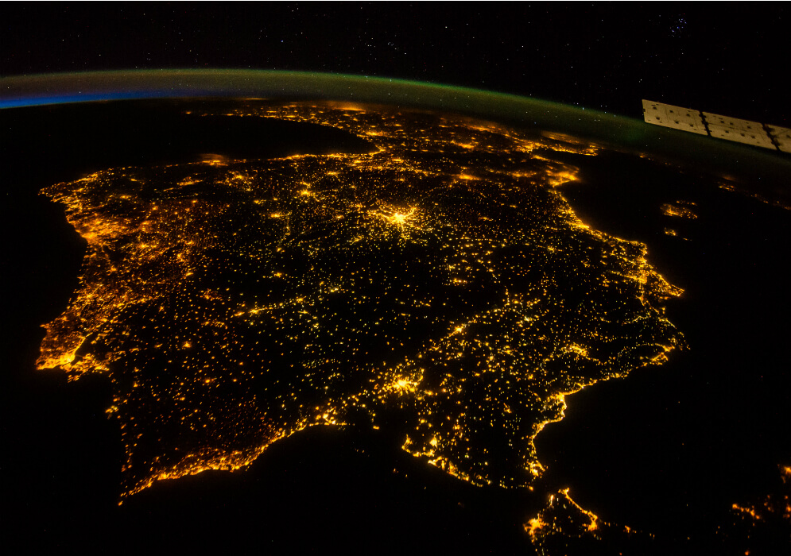

Galería de imágenes

Gran Vía de Madrid
Parque del Retiro
Palacio Real de Madrid
Consulta aquí la previsión meteorológica actualizada de cualquier comunidad autónoma, provincia y municipio de España.
Descubre el estado del cielo, la temperatura, la humedad, el viento y mucho más con datos actualizados desde fuentes oficiales.
¡Explora y mantente informado del clima estés donde estés!
Madrid es la capital de España y una ciudad vibrante, moderna y llena de historia. Con una gran oferta cultural, gastronómica y de ocio, destaca por su arquitectura, sus museos y sus zonas verdes. Además, es conocida por sus veranos calurosos y sus inviernos fríos.
Fiestas patronales: San Isidro (15 de mayo)
Gran Vía de Madrid
Parque del Retiro
Palacio Real de Madrid
Moraleja de Enmedio es un apacible municipio de la Comunidad de Madrid, ubicado estratégicamente entre grandes núcleos urbanos como Móstoles, Fuenlabrada y Alcorcón. A pesar de su cercanía a la ciudad, conserva su esencia rural y un entorno natural que lo hace ideal para desconectar del ajetreo diario.
Su historia se remonta a la Edad Media y aún conserva vestigios de su pasado, como la Iglesia Parroquial de San Millán o antiguas construcciones rurales. Es también conocido por ser escenario de varias producciones televisivas españolas, lo que le ha dado cierta proyección mediática en los últimos años.
Moraleja ofrece a sus vecinos y visitantes zonas verdes, espacios para el deporte, mercados locales y una comunidad acogedora. El municipio está en constante crecimiento, pero sin perder sus tradiciones y su vida tranquila de pueblo.
Fiestas patronales: Nuestra Señora de la Antigua (primer fin de semana de septiembre), con encierros, música, fuegos artificiales y actividades para todos los públicos.

Ayuntamiento
Fuente de la Iglesia
Vista aerea